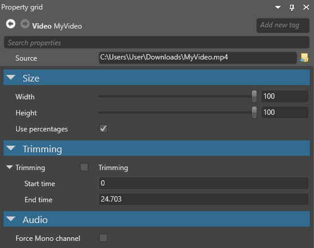

ビデオのプロパティ
初級 デザイナー
ビデオ アセットのプロパティを見るには、アセットビュー で選択し、プロパティグリッド を使います。

| プロパティ | 説明 |
|---|---|
| Width | ビデオの表示幅を指定します。値は、パーセンテージまたはピクセルサイズで指定します（どちらで指定するかは Use percentages プロパティで指定します）。 |
| Height | ビデオの表示高を指定します。値は、パーセンテージまたはピクセルサイズで指定します（どちらで指定するかは Use percentages プロパティで指定します）。 |
| Use percentages | Width プロパティと Height プロパティの値を、パーセンテージで指定します。これを有効にして高さに 100 % を指定した場合、Stride はビデオの実際の（等倍の）幅の 100 % の大きさで表示します。無効にした場合は、値をピクセル単位で指定するため、ビデオの実際のピクセル等倍サイズを越えて大きく表示することができます。 |
| Trimming | 有効にすると、Start time（開始時刻）とEnd time（終了時刻）で指定した範囲だけを表示します。 |
| Start time | ビデオの再生を開始する時刻（秒単位。例：100.500）。 |
| End time | ビデオの再生を停止する時刻（秒単位。例：100.500）。 |
| Force mono channel | ビデオの音声をモノラルに変換します。ビデオに空間オーディオを使いたい場合に便利です。 |
Note
今のところ、アセットプレビューでビデオをプレビューすることはできません。